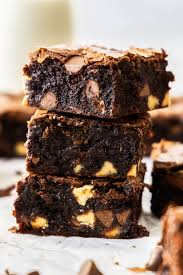

Einfache und saftige Schoko-Brownies selberzumachen kann ganz leicht sein – wenn du dich an unser geniales Rezept hältst! Damit gehören trockene Brownies der Vergangenheit an.
Du benötigst: Auflaufform (30 x 20 cm), Schüssel, kleiner Topf, Rührschüssel, Handrührgerät mit Schneebesen, scharfes Messer, Schneidebrett, Teigschaber
Ofen auf 175 Grad Ober-/ Unterhitze (Umluft: 155 Grad) vorheizen. Die Auflaufform (30 x 20 cm) gut einfetten.
Etwa 150 g der Zartbitterschokolade mit der Butter in einem kleinen Topf schmelzen. Etwas auskühlen lassen.
Eier mit Vanillezucker und braunem Zucker schaumig schlagen. Anschließend die etwas abgekühlte Schokomasse hinzugeben und unterrühren.
Mehl mit Backpulver, Salz und Kakaopulver vermengen und unter die Eiermasse rühren. Die übrige Schokolade grob hacken und vorsichtig unter den Teig heben.
Den Teig in die vorbereitete Auflaufform geben, glattstreichen und im vorgeheizten Ofen circa 20 Minuten backen.
Ergiebigkeit: Eine Form ergibt ca. 12 Brownies.
Nimm die Brownies am besten 1-2 Minuten früher aus dem Ofen. So bleiben sie innen richtig schön feucht und "fudgy".
Verzierung: Du kannst zusätzlich 100g Zartbitterschokolade im Wasserbad schmelzen und über die fertigen Brownies gießen. Yummy!